
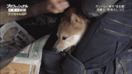

해법:니가 날 물어? 난 너 죽일 거야!

해법:니가 날 물어? 난 너 죽일 거야!

이 짤에 나온 강아지가 그거라며 안락사 당하기 직전에 지푸라기 잡는 심정으로 진짜 걍 사람 손만봐도 지릴정도로 공포교육 하는거라던데
진짜 분노조절장애
- 팔다리가 뜯겨 나가서 과다출혈과 쇼크로 죽기 직전인데도 너죽고 나죽자 하면서 덤비는거.
대부분 줘 패면. 맞다가 죽을지도 모르겠다 싶을정도도로 줘 패면 인간이든 사람이든 다 깨갱 함. 생존본능이 앞서기 때문에.
진짜 분노조절장애는 생존본능이 작용하지 않을정도로 뇌에 이상이 있는거라서. 정말 정말 극한적으로 희귀함.
ㄹㅇㅋㅋ 자칭 분조장들 보면 웃김
진짜 분조장 강아지한번 나오지않았나? 강형욱도 이건 얜 진짜 돌연변이라고
캐바캐임
진짜 싸이코패스 강아지는 자기 이빨이 다 뜯겨 나가도 물어재낌
자기가 느끼는 고통도 관심사가 아닌거지
강형욱이 하는 프로에서 진짜 분조장 개 한번 나온적 있긴 했음
쇠로 된 목줄 물어뜯어서 지 입에서 피가 철철 나는데도 멈추지 않고, 보호자가 때려패고 누가 제압해고 해도 전혀 그런거에 신경도 안쓰고 자기 할거만 하더라
강형욱도 얘는 싸이코패스라고 솔루션 포기함
강형욱킥~
그정도면 사람해치기전에 살처분해야할듯 ..
진짜 관상은 과학인가...
견주 관상이 딱....에효..
나랑 같은거 본거맞냐 나머지 개 여러마리 기르는 가정인데 다른개들은 잘큰거봐선 보호자 잘못 아니라고 나쵸라는 애의 기질문제라고 자막에 박혀있는데
까놓고 말해서 뚱뚱한 사람은 좋은 견주이기 어려움
강아지들 잘 키우려면 산책 하루에 최소 2번임
할머니들이 괜히 집에서만 놀아줘도 되는 시츄, 말티즈 키우는게 아녀
저 상황도 전형적인 합사 실패고 주인 잘못임
삼시바 색깔놀이 하고 싶어서 별 생각없이 순한 흰둥이 데려왔는데
성견끼리 대충 합사시키니 원래 잘지내던 누렁이가 완전히 뿔나서 문제견 된거
글서 합사는 임보하다 정 안되면 돌려보낼 것까지 포함해서 한참 봐야 함
아 내가 잘못봤네. 미안
관상가 양반 내가 왕이 될 상인가?
어련하시겠어요ㅋㅋ
말 안듣는 개 싸다구 ㅈㄴ 날리고 던지면 알아서 김
나쵸 바르가 이자식
만지지마 시바
똑똑한 개일수록 어설프고 일관성 없는 훈육하는 사람은 칼같이 좆밥븅신 취급하더라. 확실한 서열관계가 정립돼있지 않으면 개 스스로 만들기 위해 공격성도 더 커지는 듯
너 문장이 왜 이 모양이니
역시 씨발견 ㅋㅋㅋ
표정부터 그냥ㅋㅋㅋㅋ 다른 강아지들은 순하고 이뻐보이는데 쟤만 저러네?
마메조 치료법 한번이면 바로 해결됨
몽둥이는 답을 알고있다
개는 동물이다 새끼때부터 확실히 서열잡아주면 ㅈㄹ 안한다 ㅋㅋ 오줌 질질싸게 혼내 놓으면 얌전해짐
이상하다...우리집 가나디는 내손만 백번물어서 피만 101번봤는데 빡쳐서 엉덩이 피멍들동안 팼는데도 또 무는데...10살이라 이제 내가 그냥 입질할거 대충알아서 피하기는하는데...씁...어렵다
가나디: 이 사람새끼 101번째야 겨우 서열 교육이 됐군. 역시 손질하는 사람놈은 줘물어야 돼
강형욱이면 진짜 해결해주겠지 ㅋㅋ
가짜 분조장일까 진짜 분조장일까
난폭하게 굴 때마다 꼬리 내릴 때까지 줘패면 맞으면서도 계속 덤빌까 아니면 고쳐질까